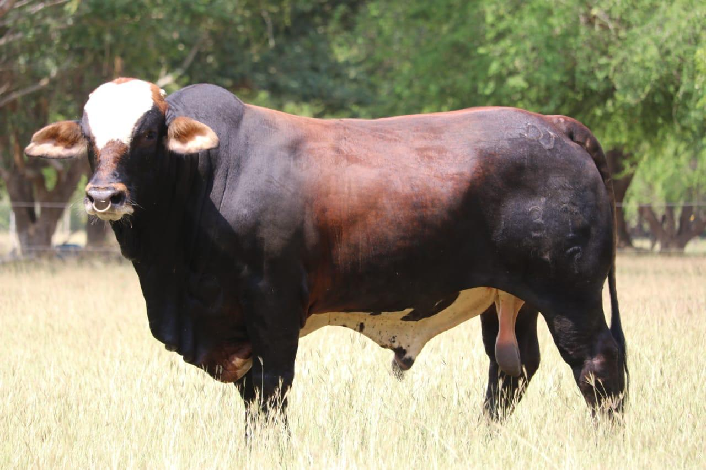
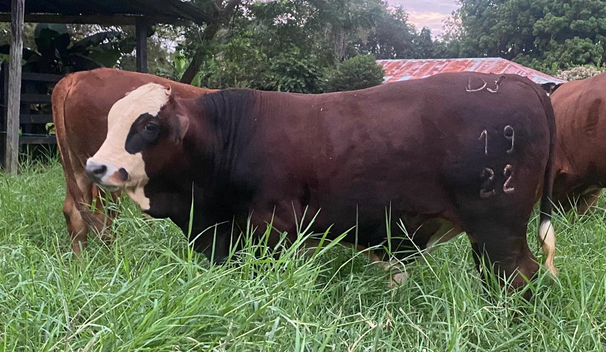
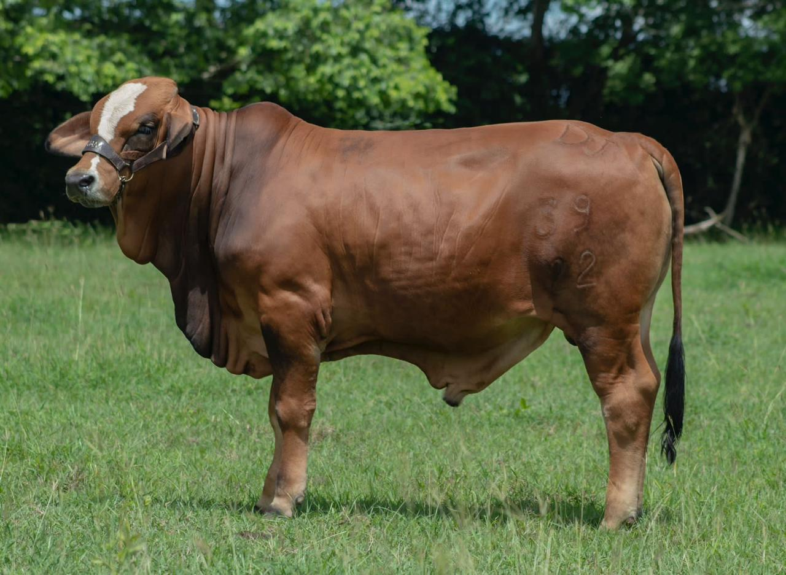
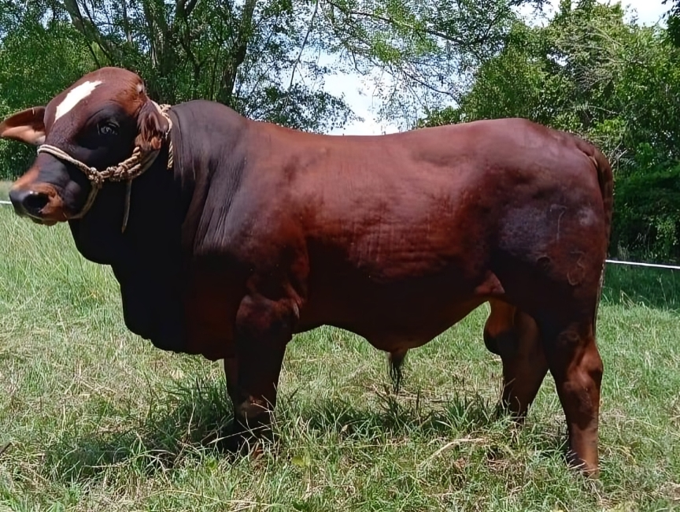
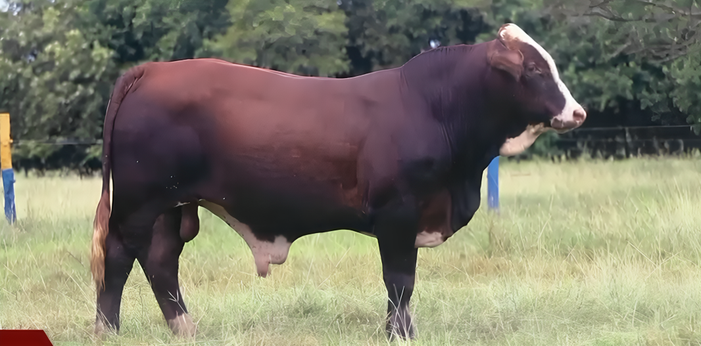

Nuestros reproductores son producto de una alta selección basada en fertilidad, traducida en testículos sanos y con circunferencia
escrotal acorde a su edad, prepucios a la altura del corvejón, con buenas patas y buen desplazamiento, con balance,
estructura suficiente para soportar el peso, caracterización racial y masculinidad.
Machos Simbrah: Genética de Excelencia
Nuestros machos Simbrah se destacan por poseer la mejor genética disponible en el mercado. Son el resultado de una cuidadosa
selección y cría, combinando las características superiores del Simmental y del Brahman. Esta combinación ha dado lugar a
ejemplares excepcionales que sobresalen en diversos aspectos.
Los machos Simbrah son altamente adaptables a diferentes condiciones climáticas y de manejo, garantizando un rendimiento
óptimo en diversas regiones. Ofrecen una calidad de carne superior, con buen marmoleo y ternura, lo que satisface las exigencias
de los mercados más selectos y transmiten a sus hijas habilidad materna.
La genética Simbrah es conocida por su alta fertilidad, asegurando una mayor eficiencia reproductiva y rendimiento en tu
ganadería. Estos animales poseen una notable rusticidad y resistencia a enfermedades, lo que reduce los costos de mantenimiento
y aumenta la rentabilidad.
Los Simbrah tienen una destacada capacidad de ganancia de peso y desarrollo, permitiendo obtener animales de mayor tamaño
y mejor calidad en menos tiempo. Con nuestra genética Simbrah, estás invirtiendo en lo mejor para tu operación ganadera.
Estos machos son el fruto de años de dedicación y experiencia, asegurando que obtendrás animales de la más alta calidad,
capaces de transformar tu producción.

German
Hijo de vaca 3/4 brahman 1/4 simmental con genética de Francia y Lusitania que va al Winchester, su padre Germanicus,
toro simmental alemán que transmite musculatura, estructura, ganancia de peso y calidad de carne, con buena habilidad
materna.
Saber más

Donatello
Hijo de vaca ¾ brahman, ¼ simmental, hija del Remedy 573, toro líder en habilidad materna en el brahman rojo, su madre
a registrado producciones de leche en potrero en el trópico bajo. Su padre es un toro simmental 75% simmental americano
25% alemán, que transmite talla media, mucho pigmento y conserva habilidad materna.
Saber más

Federico
Macho F1 hijo de vaca brahman roja proveniente de Ganadería de los Bongos, con líneas del Remedy 573 y Rojo Bravo
6-125 con mucha habilidad materna y toro simmental proveniente de la Hacienda el Monte (pastelillo) que transmite
musculatura y estructura. La mejor expresión del vigor hibrido, al ano llego con un peso de 400 Kg.
Saber más

Toro F1 7-23
Macho F1 hijo de vaca brahman roja de línea fontenot, y su padre es un toro simmental 75% simmental americano 25%
alemán, que transmite talla media, mucho pigmento y conserva habilidad materna.
Saber más

Horacio
Macho de primera generación hijo de vaca ¾ brahman gris y ¼ simmental, y de toro simmental 50% americano y 50% alemán,
de línea Humid y Dustin. Lo mejor en combinación del doble propósito.
Saber más

Juancho Polo
Macho ¾ brahman ¼ simmental, hijo de vaca F1 con línea de brahman del 8-25 y 4-95 y toro simmental alemán línea Romtell.
Su padre el toro Jefferson Manso 766-3, línea abierta en el brahman. Gran ganancia de peso, destete superior a 300 Kg a los 8 meses y al ano supero los 400 Kg, todo en pastoreo.
Saber más